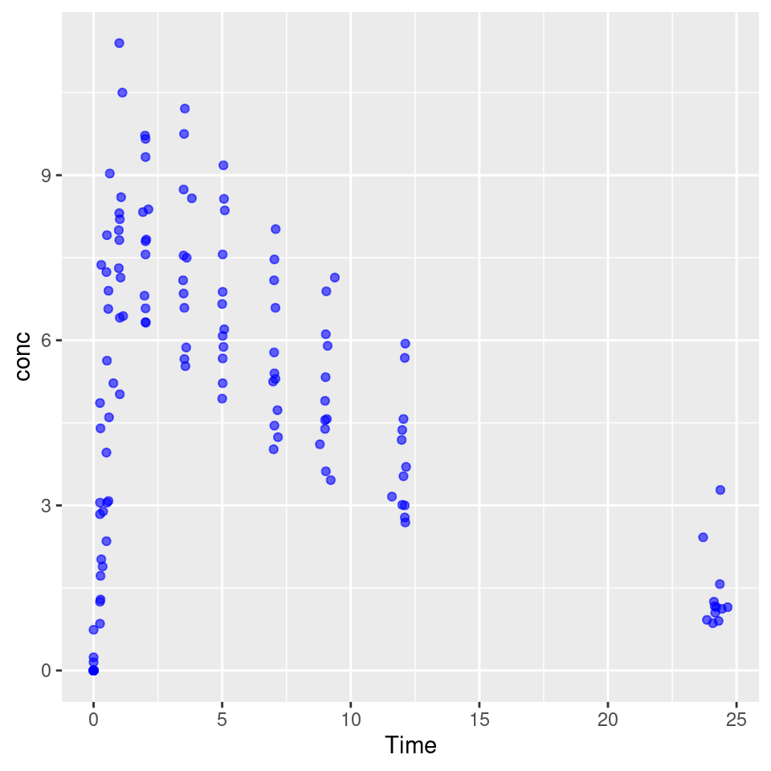
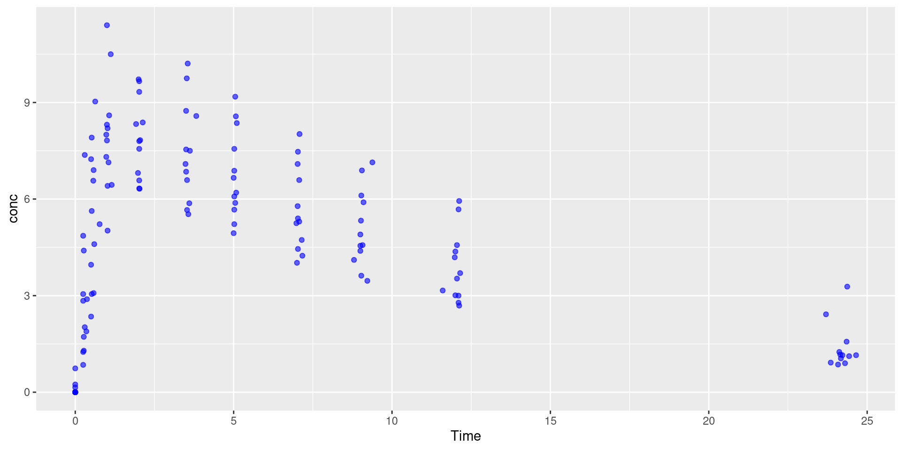
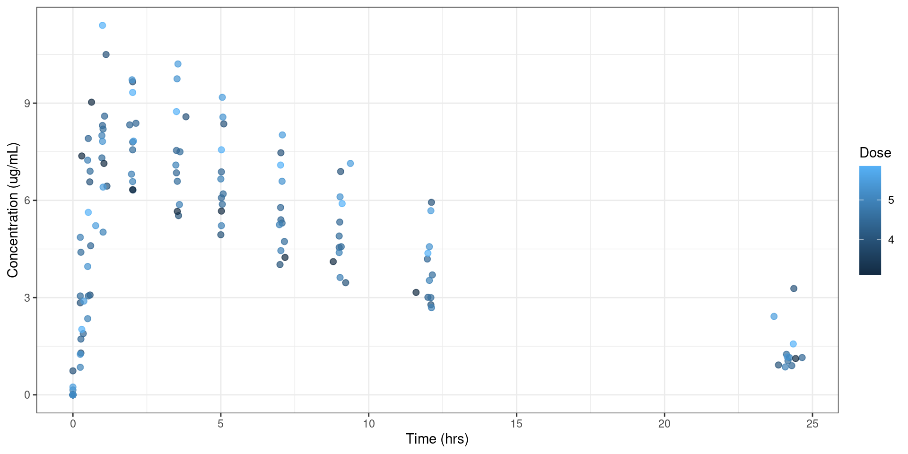
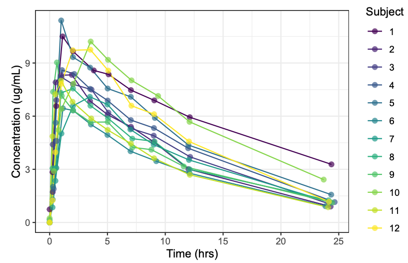
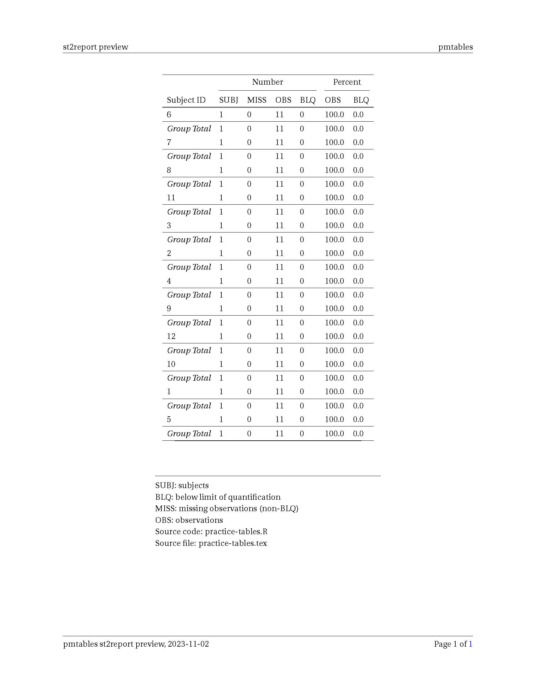

flowchart LR A[rmd] ==> D[knitr] D[knitr] ==> F[md] F[md] ==> G[pandoc] G[pandoc] ==> H[pdf] G[pandoc] ==> I[HTML]
ACoP14 Workshop Session
2023-11-04
Introduce the three main components (yaml header, text and code chunks) of a Quarto document
Introduce some of Quarto’s unique and helpful features
Generate your own Quarto document
flowchart LR A[rmd] ==> D[knitr] D[knitr] ==> F[md] F[md] ==> G[pandoc] G[pandoc] ==> H[pdf] G[pandoc] ==> I[HTML]
- Quarto documents can even be rendered using the command line %%{init: {'theme': 'base', 'themeVariables': { 'fontSize': '30px', 'fontFamily': 'Inter'}}}%%
flowchart LR
subgraph LL[qmd]
A[r]
B[Python]
C[Julia]
end
B[Python] ==> D[knitr]
B[Python] ==> E[Jupyter]
B[Python] ==> K[VS Code]
D[knitr] ==> F[md]
E[Jupyter] ==> F[md]
K[VS Code] ==> F[md]
F[md] ==> G[pandoc & Lua filters]
G[pandoc & Lua filters] ==> H[pdf/ .docx/ books]
G[pandoc & Lua filters] ==> I[HTML]
G[pandoc & Lua filters] ==> J[.pptx]
style B fill:#ffc9e6
style C fill:#ffc9e6
style E fill:#ffc9e6
style F fill:#ffc9e6
style G fill:#ffc9e6
style K fill:#ffc9e6
style LL fill:#FFF0F5
2. Nice features which Quarto includes are:
- Code Freezing: Allows you to render a document without re-executing all the code each time
- Added flexibility for document layout Example: {.colunm width="50%" heigh="50%"} - You can use code highlighting
- You can update pre-existing rmd files to qmd!For more infomation see: https://quarto.org/docs/reference/formats/pdf.html
You can specify in the YAML header whether you would like to display the code from chunks
Code folding and other options are only functional for certain types of outputs. For example, code foldering will not work with pdf.
For more information see: https://quarto.org/docs/output-formats/html-code.html
Ask for a TOC in the YAML Header
Default features are:
TOC options vary by the type of document you are creating (not avilable for html documents)
“toc-expand” specifies the depth of items in the table of contents that should be displayed as expanded in HTML output. Use true to expand all or false to collapse all.
More info can be found at (Allaire et al. 2023) and https://quarto.org/docs/reference/formats/pdf.html
More info can be found https://quarto.org/docs/authoring/markdown-basics.html
The keyboard shortcut to add a new code chunk is option+command+I
Quarto documents can have r, python, Julia, Stan, mermaid and more
Quarto code chunks use YAML syntax for chunk options. This means that the options are no longer placed in the brackets but below and you use a “#|” to list the options
More info can be found https://quarto.org/docs/reference/cells/cells-knitr.html
The “label” option is how the figure is identified when you cross reference it. To cross reference the figure in text type “@ label”
figure 1 is my first Figure
The “fig-cap” is the figure’s title
To display the figure code and output figure side-by-side use the option: “output-location: column-fragment”

More info can be found https://quarto.org/docs/authoring/figures.html
figure 2 (a) and figure 2 (b) below.


More info can be found https://quarto.org/docs/authoring/figures.html
To insert an image: ! [Add a figure caption] (figurename.png) {add extra formatting settings here}
In the {} is where you include a label for cross referencing the figure. The label should be written as #figname
You can include more than one argument in the {} section but separate each argument inpute by a space
figure 3 describes the PK of Theophylline by Subject

More info can be found https://quarto.org/docs/authoring/figures.html
You can customize how imported figures are displayed by using divs
divs are marked by at least three consecutive colons :::
The structure of a div is :::{some attribute} input :::
You must have the same number of colons at the beginning and end of the div
figure 4 (a) and figure 4 (b) below.
More info can be found https://quarto.org/docs/authoring/figures.html
```{r}
#| label: tbl-PK
#| tbl-cap: "Summary of Theophylline PK"
#| tbl-colwidths: [60,40]
knitr::kable(head(Theoph))
```| Subject | Wt | Dose | Time | conc |
|---|---|---|---|---|
| 1 | 79.6 | 4.02 | 0.00 | 0.74 |
| 1 | 79.6 | 4.02 | 0.25 | 2.84 |
| 1 | 79.6 | 4.02 | 0.57 | 6.57 |
| 1 | 79.6 | 4.02 | 1.12 | 10.50 |
| 1 | 79.6 | 4.02 | 2.02 | 9.66 |
| 1 | 79.6 | 4.02 | 3.82 | 8.58 |
More info can be found https://quarto.org/docs/authoring/tables.html
\begin{table}[!h]
\begin{center}
\caption{Caption of my table}
\footnotesize
\label{param-table}
\input{tables/pk-param-fixed.tex}
\end{center}
\end{table}
Alternatively: \input{tables/pk-param-fixed.tex}
More info can be found https://quarto.org/docs/authoring/tables.html

More info can be found https://quarto.org/docs/authoring/tables.html
use a pair of `` around the text or code
\textcolor{red}{text color is red} : (not html documents)
<span style="color:red;">this color is red</span> : this color is red (html documents)
superscript^2^ / subscript~2~ : superscript2 / subscript2
~~strikethrough~~ : strikethrough
*italic* : italic
**bold** : bold
***bold italics*** : bold italics
<br>\vskip0.5cm—